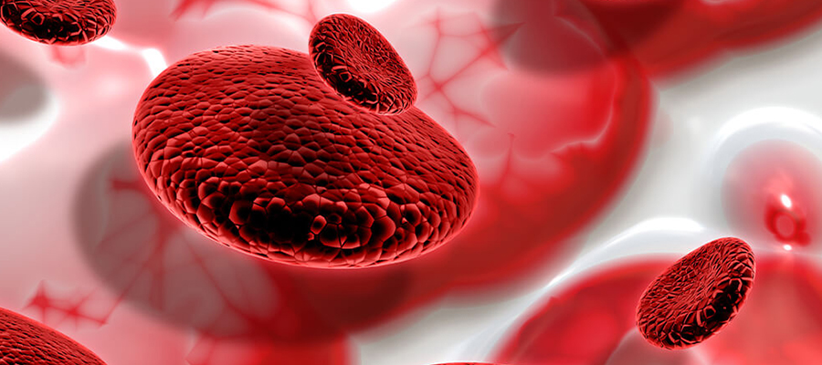

Anémies
Les anémies sont des conditions où la quantité de globules rouges ou de l’hémoglobine dans le sang est insuffisante pour répondre aux besoins en oxygène du corps. Elles peuvent être causées par une variété de facteurs, notamment des carences nutritionnelles, des maladies chroniques, des troubles génétiques, ou des problèmes de moelle osseuse.
Voici les principales sortes d'anémies:
Manque de fer → production insuffisante d’hémoglobine.
Causes : Carence alimentaire, pertes de sang (règles abondantes, ulcère), malabsorption.
Supplémentation en fer
traitement de la cause (ex : saignement)
Déficit en vitamine B12 dû souvent à une maladie auto-immune qui empêche son absorption.
Injections de B12
Supplémentation orale à vie
Défaut de synthèse de l’ADN dans les globules rouges → cellules anormalement grandes (mégaloblastes).
Causes : Carence en folates ou en B12 (souvent nutritionnelle ou digestive).
Injections de B12
Supplémentation orale à vie
Défaut de synthèse de l’ADN dans les globules rouges → cellules anormalement grandes (mégaloblastes).
Causes : Carence en folates ou en B12 (souvent nutritionnelle ou digestive).
Injections de B12
Supplémentation orale à vie
La moelle osseuse est un tissu spongieux situé à l’intérieur de certains os, et c’est là que sont produites la plupart des cellules sanguines, y compris les globules rouges, les globules blancs et les plaquettes. Les maladies de la moelle osseuse peuvent entraîner une production insuffisante ou anormale de ces cellules, ce qui peut provoquer des troubles hématologiques graves.
Voici une présentation des principales maladies de la moelle osseuse:
Moelle osseuse qui ne produit plus assez de cellules sanguines.
Causes : Médicaments, virus, auto-immunité, idiopathique.
Transfusions
immunosuppresseurs
greffe de moelle
Fibrose de la moelle osseuse → production anormale de cellules sanguines.
Causes : Médicaments, virus, auto-immunité, idiopathique.
Médicaments ciblés (ex. ruxolitinib)
transfusions/p>
greffe
Production inefficace de cellules sanguines, avec risque de transformation en leucémie aiguë.
Transfusions
agents hypométhylants
greffe
Maladie génétique rare entraînant une insuffisance de la moelle osseuse.
androgènes
greffe de moelle osseuse

Les troubles de la coagulation sont des pathologies qui affectent la capacité du sang à se coaguler normalement, ce qui peut entraîner des saignements excessifs ou des hémorragies internes.
Voici les principales sortes:
Maladie génétique liée au chromosome X → déficit en facteur VIII (hémophilie A) ou IX (hémophilie B).
Injections régulières du facteur manquant (préventif ou curatif).
Trouble hémorragique génétique dû à un déficit en facteur von Willebrand, qui aide à l’adhésion plaquettaire
Desmopressine (stimule la libération du facteur) ou concentrés de facteurs.
Rareté congénitale ou acquise du facteur II → mauvaise coagulation.
Concentrés de prothrombine ou plasma frais congelé.
Trouble très rare, souvent génétique, du à une absence partielle ou totale du facteur V.
Transfusions de plasma.
Destruction auto-immune des plaquettes.
Corticoïdes.
immunoglobulines IV
splénectomie ou médicaments immunosuppresseurs
La vitamine K est essentielle à la synthèse des facteurs II, VII, IX, X.
Causes : Malabsorption, alimentation pauvre, traitement anticoagulant (AVK).
Supplémentation en vitamine K.
ajustement des traitements anticoagulants